Chapter 5 Results
5.1 Distribution: Single Feature
5.1.1 Crime Category: Word Cloud
As we mentioned before the original categories of crimes are too detailed as shown in the wordcloud below. We could see that larceny and assault are two very frequent crimes, and actually many of the detailed crime category can be concluded into a more genral one, this is our motivation of the corresponding re-categorization.
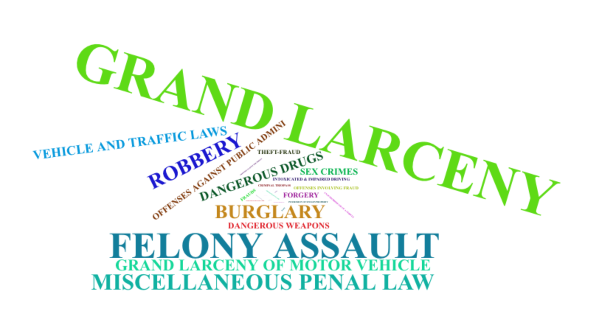
5.1.2 Crime Category: Recategorized Crime’s Distribution
This is the distribution of more general crime categories we generated. Others group contains most crimes like ‘MISCELLANEOUS PENAL LAW’ and ‘FORGERY’. The next two dominating categories are THEFR and ASSAULT, and more severe crimes like SEX CRIME and MURDER are much more rare. The point of categorizing them is that people might have different level of concerns about different type of crimes. Crime like MURDER definitely lay more effects on people’s concern than a Penal Violation.
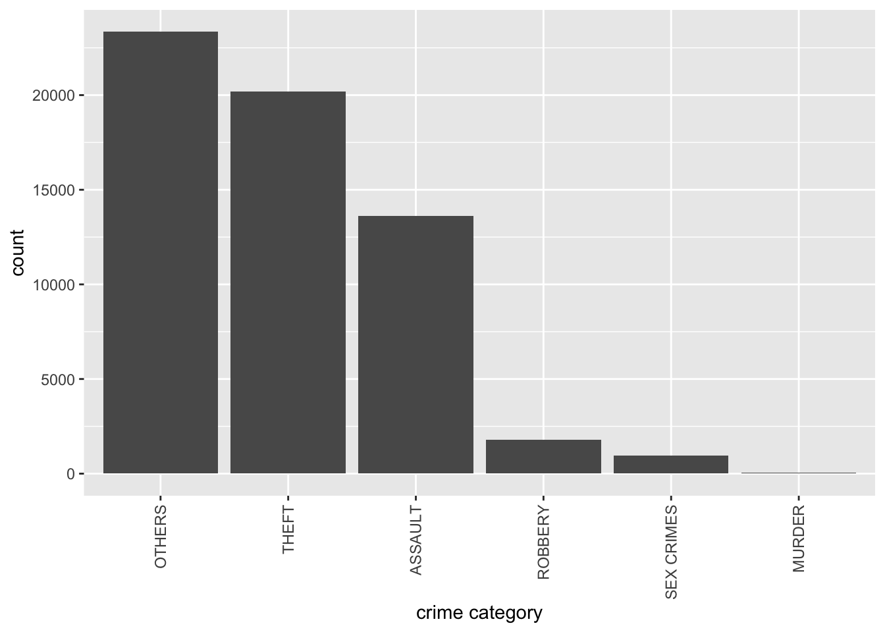
5.1.3 Location of Occurence: Word Cloud
Similarly, we also use word cloud to show the detailed location categories, and categorized in more general ones. We see that street and residences are where most crimes happen.
5.1.4 Location of Occurence: Recategorized Location’s Distribution
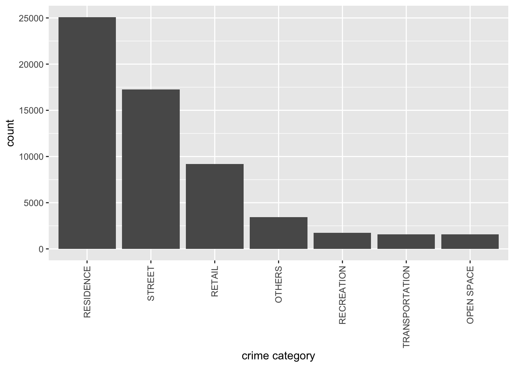
5.2 Distribution & Connection: Between Features
5.2.1 Suspect Alluvial Crime Type
In this section, we are looking to get the profile of the suspect by the crime type and the profile of the victim by the crime type. We start with the crime type and based on the plot, we set the class to be suspect/victim gender, suspect/victim age group, and suspect/victim race.
Based on the plot, we found that the majority of the crime category are assault, other, theft, and most of the crime suspects fall in the age between 25-44. The top of the suspect race group is the black people. The next suspect group falls to be the white Hispanic. From the output of the graph, it seems like there are differences in terms of the suspect gender, males tend to be more aggressive than females, which is not surprising to see.
However, from the plot we did not see very much the difference in suspects’ profiles among different crime categories.
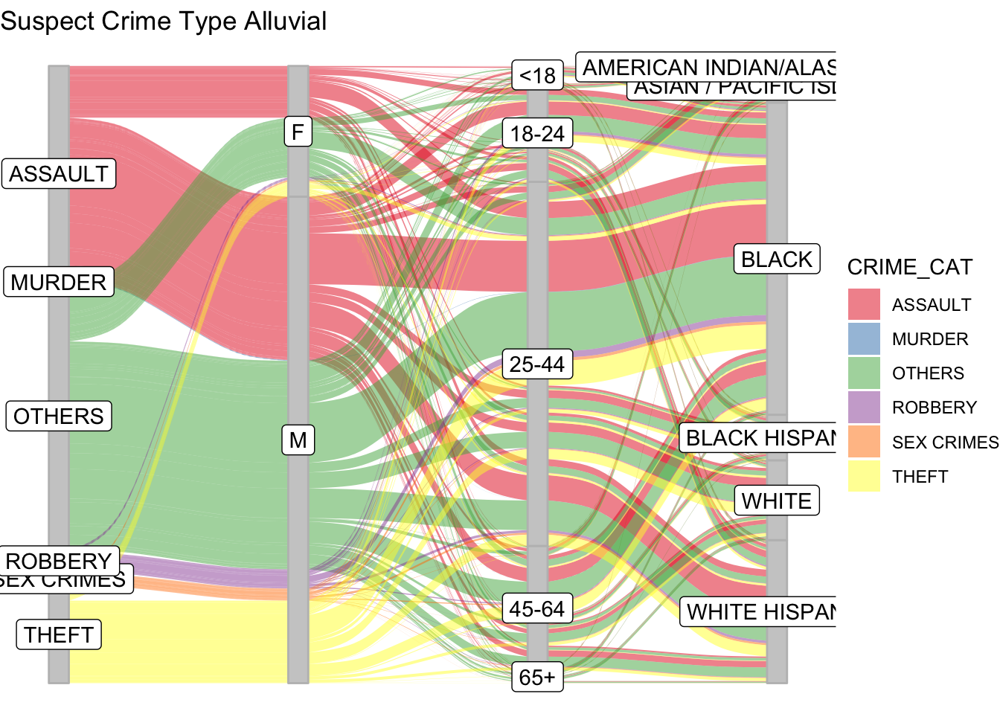
5.2.2 Victim Alluvial Crime Type
After having the overall understanding of the suspect profile, we are now moving on towards victim profile.
In the alluvial plot, we found that the gender of victims are evenly distributed. Such a result is somehow beyond our expectation, we initially expect to see that female victim might have an overwhelming count in the case complaints. Unlike the previous plot, we could basically see desparity of victim profile among different crimes this time. For example, females are seen more likely to undergo assault than males while male are more likely to confront robbery and theft than female. Unsuprisingly, sex crimes happens much more to female than male. Again, like the suspect group, the majority of the age group here falls in the 25-44, and top three victim race groups are the black race group, the white race group, and the white Hispano race group
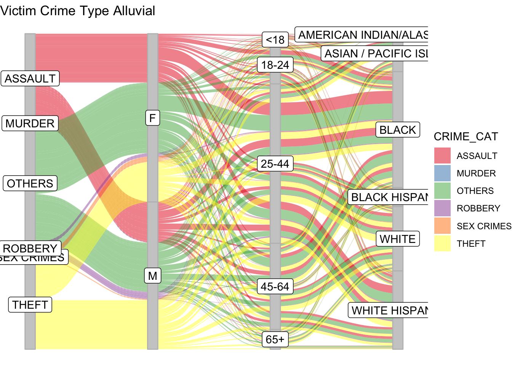
5.2.3 Law Category VS Time of Occurence
In this section, we simply want to know what periods of time in a day are crime more likely to happen. Will severity of crime affect when the crime happens?
The output of the graph indicates that early morning is the “safest time” of a day. For violation and misdemeanor, crime occurence peaks at the period between 10 am to 20 pm. However, such a pattern does not hold for the felony crime, we see that occurrence rate of felony are equally high from 10am to midnight. Such results are somehow beyond our expectations, we have always been told that daytime is much safer than nighttime, however, the results somehow reject such assumption and lead us to the exact opposite way. 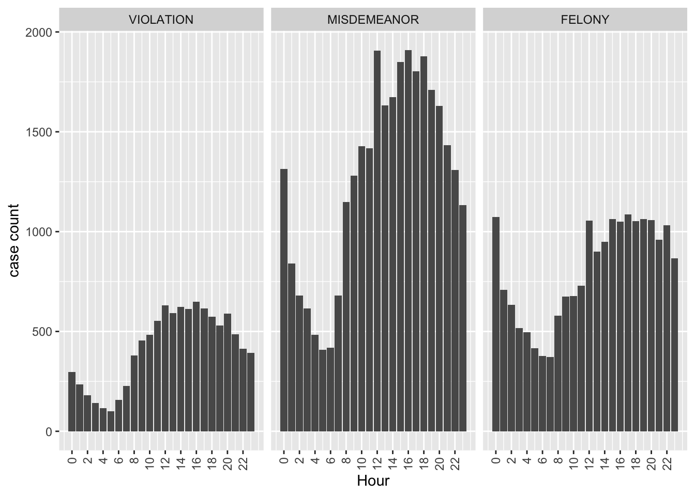
5.2.4 Heat Map of Crime Occurrence: Day Time x Location
In this heatmap below, we want know where and when crimes are more likely to happen, further more, we wonder the “dangerous time periods” might differ accordingly to the locations. Guess what? From our findings it indeed does. There are three outstanding findings from our plot. 1. Mid-noon and mid-night are when crime are the time when crime most likely to happen at residence. 2. Happening of street crimes peak at evening between 5 to 10. 3.Crimes in retail mainly happen in the afternoon.
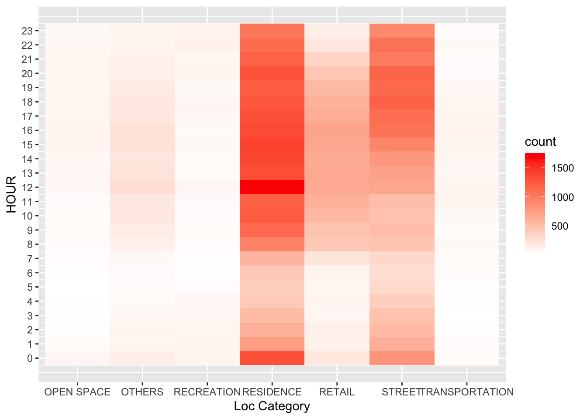
## $title
## [1] "Heatmap HOUR VS loc Category"
##
## attr(,"class")
## [1] "labels"5.3 Time Series: Covid-19 vs Crime
In this section, we are interested in whether the pandemic influence the type of the criminal case, and the exact location of the incident. Will that be a noticeable change in the particular trend of crime during the pandemic time?
As we mentioned early in the data issue section, we found our dataset contained limited data in 2020, and in order to moderate the potential bias caused by limited information, we first separate the dataset into 2020 and 2021 and rescale the case that happened in each of the years by dividing the max case of the particular category within that year. Thus, our y-axis is not that case count in the following graph
5.3.1 Time Series Total
As it can be seen from the graph, that in the year 2020, before the pandemic, the crime in NewYork is at a relatively low rate compared to the pandemic time, while as the pandemic begins, the very first stage of the pandemic, the criminal case has a positive association with the covid confirmed case.
While in the year of 2021, such association reveal in the opposite direction, as the number of confirmed covid cases decrease, the number of the criminal did not change much.
We infer that the main cause of the different association in 2020 and 2021 is that, when the covid-19 first broke out in 2020, the government was not prepared and thus had a stronger impact on people’s life. Unemployment rate increased, people got panic, and all these brought a more volatile society. Howver, when entering 2021, government are more prepared, vacinations came out, people are already used to covid-19 hence the situation is eased. 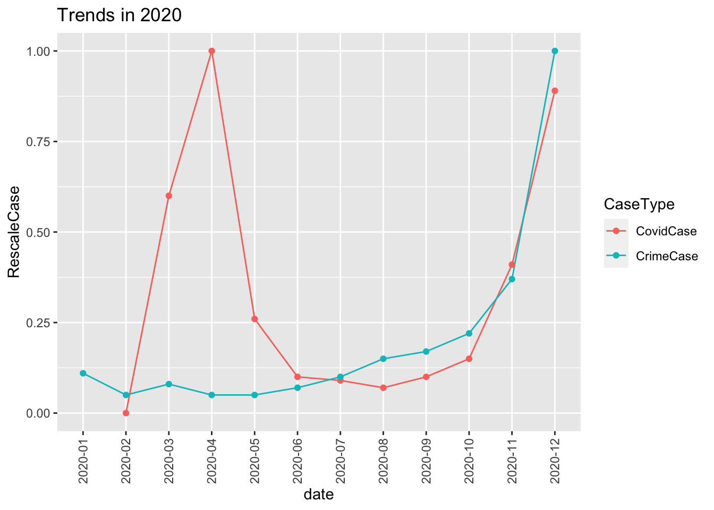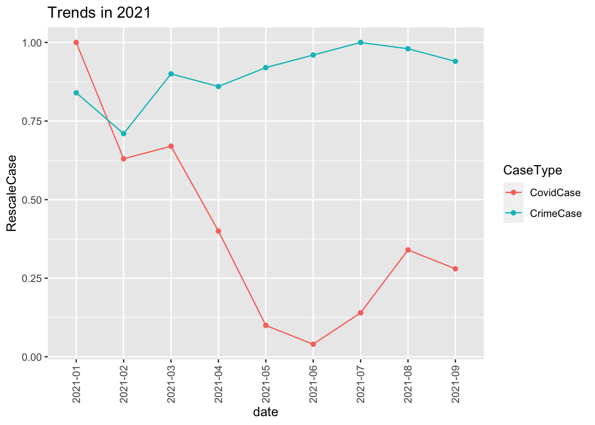
5.3.2 Time Series: Trends of Each Crime Category VS Covid-19
For the crime type, we also did a time series analysis plot, for the year 2020, among all the cases, sex crimes are on the case categories that are most influenced by the pandemic, a noticeable increase as the confirmed case increase. For the year of 2021, it seems no clear connection between particular crime types with the covid cases. All the crime types are in a relatively slow increasing pattern, except the sex crime types.
An interesting finding is at the right part of the graph, we can see that as the covid-confirmed case increase again from June, the case of sex crimes increases again too. Although sex crimes cases and the covid-19 confirmed cases do not follow the exact pattern during all the moments in the time period that we investigate, but compared to other criminal categories’ connection with the covid confirmed cases, it’s enough to conclude that there is some association exists between sex crimes and covid confirmed case. 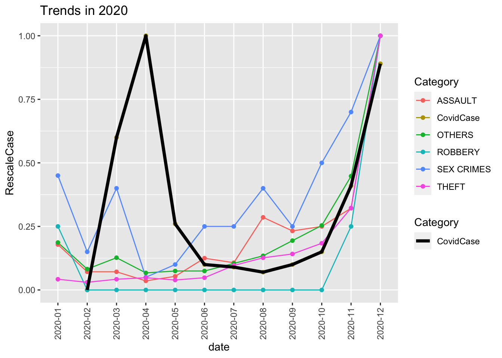
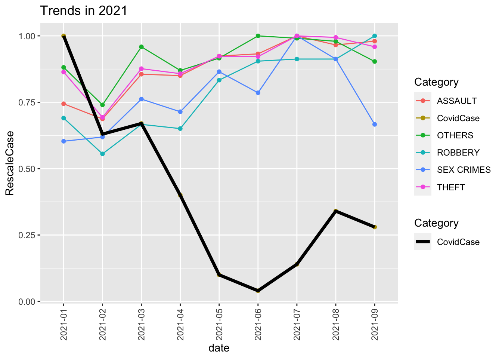
5.3.3 Time Series: Trends of Each Location Category VS Covid-19
In the year 2020, we can see from the graph that the location of the street, retail, residence are at a relatively low point at the most severe time of the pandemic time. It makes sense that because of the pandemic, for the safety concern, people are more tend to stay at home, which moderate the crime cases that happened at places like streets. One interesting finding is that as the number of confirmed case decrease, the number of criminal cases that happen on transportation has a notable increase. This makes sense since people are more likely to go out as the severity of the pandemic is alleviated. While in the year 2021, it seems that there is no worth telling finding. 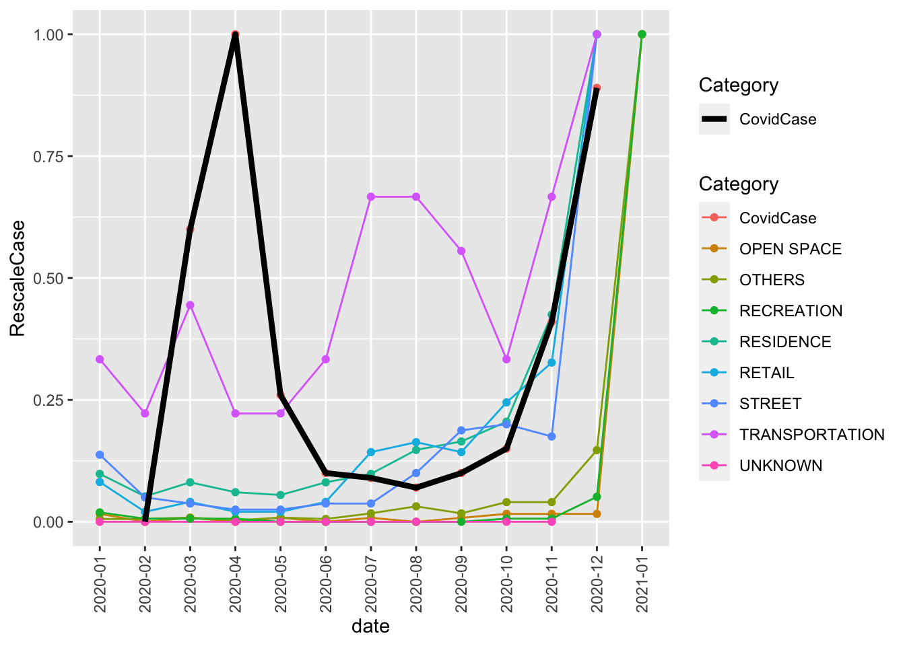
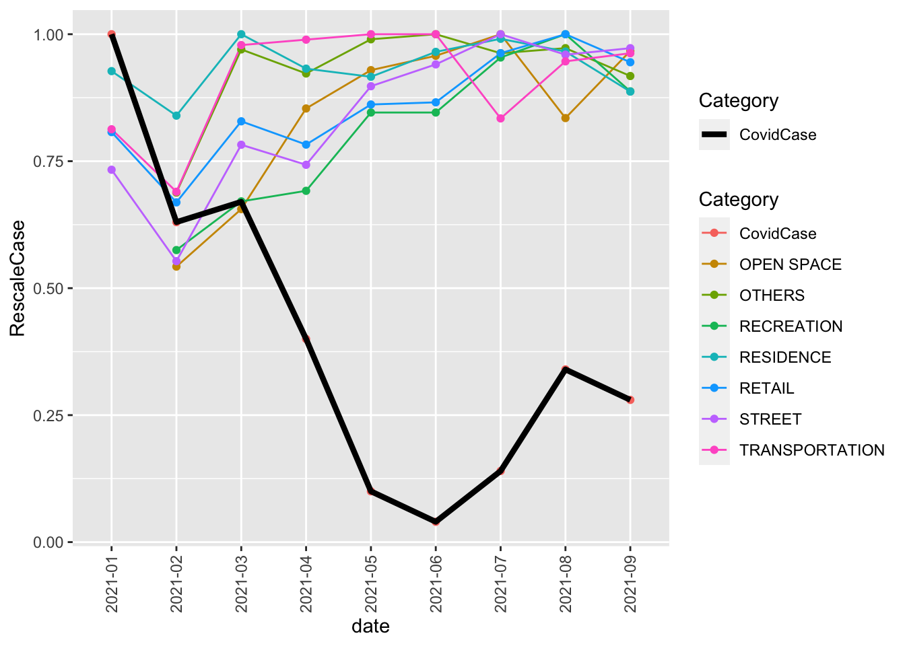